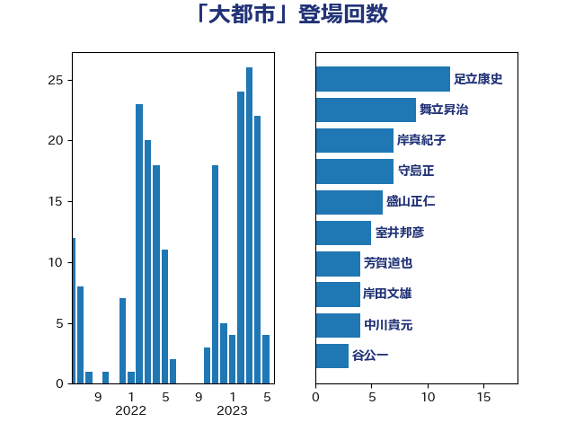

単語「大都市」

| 足立康史 | 日本維新の会 | 12 回 |
| 舞立昇治 | 自由民主党 | 9 回 |
| 岸真紀子 | 立憲民主党 | 7 回 |
| 守島正 | 日本維新の会 | 7 回 |
| 盛山正仁 | 自由民主党 | 6 回 |
| 室井邦彦 | 日本維新の会 | 5 回 |
| 芳賀道也 | 国民民主党 | 4 回 |
| 岸田文雄 | 自由民主党 | 4 回 |
| 中川貴元 | 自由民主党 | 4 回 |
| 谷公一 | 自由民主党 | 3 回 |
| 西村康稔 | 自由民主党 | 3 回 |
| 末次精一 | 立憲民主党 | 3 回 |
| 山本太郎 | れいわ新選組 | 3 回 |
| 伊波洋一 | 無所属 | 3 回 |
| 鈴木英敬 | 自由民主党 | 2 回 |
| 金村龍那 | 日本維新の会 | 2 回 |
| 稲富修二 | 立憲民主党 | 2 回 |
| 福島みずほ | 社会民主党 | 2 回 |
| 清水貴之 | 日本維新の会 | 2 回 |
| 河野太郎 | 自由民主党 | 2 回 |
| 柳本顕 | 自由民主党 | 2 回 |
| 岡田直樹 | 自由民主党 | 2 回 |
| 岡本あき子 | 立憲民主党 | 2 回 |
| 山本順三 | 自由民主党 | 2 回 |
| 山崎誠 | 立憲民主党 | 2 回 |
| 吉田宣弘 | 公明党 | 2 回 |
| 務台俊介 | 自由民主党 | 2 回 |
| 鬼木誠 | 立憲民主党 | 1 回 |
| 高橋千鶴子 | 日本共産党 | 1 回 |
| 高木かおり | 日本維新の会 | 1 回 |
| 青木愛 | 立憲民主党 | 1 回 |
| 阿部弘樹 | 日本維新の会 | 1 回 |
| 鈴木敦 | 国民民主党 | 1 回 |
| 金子道仁 | 日本維新の会 | 1 回 |
| 野間健 | 立憲民主党 | 1 回 |
| 野田聖子 | 自由民主党 | 1 回 |
| 野上浩太郎 | 自由民主党 | 1 回 |
| 重徳和彦 | 立憲民主党 | 1 回 |
| 近藤昭一 | 立憲民主党 | 1 回 |
| 赤羽一嘉 | 公明党 | 1 回 |
| 谷合正明 | 公明党 | 1 回 |
| 西野太亮 | 自由民主党 | 1 回 |
| 葉梨康弘 | 自由民主党 | 1 回 |
| 若林洋平 | 自由民主党 | 1 回 |
| 舩後靖彦 | れいわ新選組 | 1 回 |
| 緒方林太郎 | 無所属 | 1 回 |
| 福田昭夫 | 立憲民主党 | 1 回 |
| 石橋通宏 | 立憲民主党 | 1 回 |
| 石川大我 | 立憲民主党 | 1 回 |
| 石川博崇 | 公明党 | 1 回 |
| 田島麻衣子 | 立憲民主党 | 1 回 |
| 田中健 | 国民民主党 | 1 回 |
| 玄葉光一郎 | 立憲民主党 | 1 回 |
| 牧野たかお | 自由民主党 | 1 回 |
| 片山さつき | 自由民主党 | 1 回 |
| 滝波宏文 | 自由民主党 | 1 回 |
| 渡辺周 | 立憲民主党 | 1 回 |
| 浜口誠 | 国民民主党 | 1 回 |
| 森田俊和 | 立憲民主党 | 1 回 |
| 柴田巧 | 日本維新の会 | 1 回 |
| 柴愼一 | 立憲民主党 | 1 回 |
| 東徹 | 日本維新の会 | 1 回 |
| 有村治子 | 自由民主党 | 1 回 |
| 日下正喜 | 公明党 | 1 回 |
| 新垣邦男 | 立憲民主党 | 1 回 |
| 斉藤鉄夫 | 公明党 | 1 回 |
| 打越さく良 | 立憲民主党 | 1 回 |
| 平山佐知子 | 無所属 | 1 回 |
| 山際大志郎 | 自由民主党 | 1 回 |
| 山岡達丸 | 立憲民主党 | 1 回 |
| 山口壯 | 自由民主党 | 1 回 |
| 山下雄平 | 自由民主党 | 1 回 |
| 山下貴司 | 自由民主党 | 1 回 |
| 小野泰輔 | 日本維新の会 | 1 回 |
| 塩村あやか | 立憲民主党 | 1 回 |
| 城井崇 | 立憲民主党 | 1 回 |
| 吉川元 | 立憲民主党 | 1 回 |
| 勝目康 | 自由民主党 | 1 回 |
| 加藤勝信 | 自由民主党 | 1 回 |
| 佐藤啓 | 自由民主党 | 1 回 |
| 伊東信久 | 日本維新の会 | 1 回 |
| 仁比聡平 | 日本共産党 | 1 回 |
| 仁木博文 | 無所属 | 1 回 |
| 中川正春 | 立憲民主党 | 1 回 |
| 中司宏 | 日本維新の会 | 1 回 |
| 世耕弘成 | 自由民主党 | 1 回 |
| 三浦靖 | 自由民主党 | 1 回 |